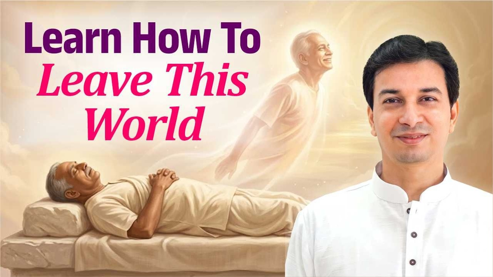

जीवन में गारंटी किस बात की है?
ज़रा सोचिए। जीवन में ऐसी कौन सी चीज़ है जो पूरी तरह शाश्वत और निश्चित है?
नौकरी लगेगी, गारंटी नहीं। विवाह होगा, गारंटी नहीं। हो गया तो टिकेगा, गारंटी नहीं। टिक गया तो सुख मिलेगा, इसकी भी गारंटी नहीं।
धन आएगा, गारंटी नहीं। आ गया तो कब तक रहेगा, यह भी कोई नहीं जानता। तो फिर निश्चित क्या है? यदि जन्म लिया है, तो मृत्यु। यह तो पक्का होना ही है।
आयु कितनी भी लंबी हो, अनंत नहीं
कोई एक वर्ष में चला जाता है, कोई पैदा होते-होते ही। किसी के 180 वर्ष जीने के अभिलेख हैं। हिमालय में 400 और 800 वर्ष तक रहने वाले योगी भी बताए जाते हैं।
चांगदेव महाराज के विषय में तो हम ज्ञानेश्वर के समय में 1400 वर्ष की आयु पढ़ते हैं। शास्त्रों में चिरंजीवी (अमर माने गए महापुरुष) का भी वर्णन आता है।
पर आयु कितनी भी हो, वह अनंत नहीं हो सकती। सामान्य मनुष्य के लिए नियम सीधा है: जन्म है, तो मृत्यु है।
क्या आप जानते हैं वह दिन कब है?
जो निश्चित है, उसकी तैयारी तो करनी होगी। पर क्या कोई बता सकता है कि वह दिन आज है, कल है, या सौ वर्ष बाद?
हम दूसरों के लिए, पूर्वजों और पितरों के लिए, पड़ोसियों के लिए करते रहते हैं। पर उनका करने से पहले आपका नंबर भी लग सकता है।
कभी फिसलकर गिर सकते हैं, कभी दुर्घटना हो सकती है, घर बैठे दिल का दौरा पड़ सकता है, भूकंप आ सकता है। कल तक ठीक थे, आज कुछ भी हो सकता है। आचार्य जी पूछते हैं कि जब उसकी तारीख ही पता नहीं है, और उसके लिए तैयार रहना है, तो जीवन कैसा जीना है?
यदि आज आपको मंच छोड़ना पड़े, तो क्या आप तैयार हैं?
Art of Living और Art of Leaving
जीने की कला (Art of Living) तो बहुत लोग सिखा सकते हैं: यहाँ कैसे रहना है, क्या कर्तव्य है।
पर आचार्य जी एक और कला की बात करते हैं: संसार छोड़ने की कला (Art of Leaving)। जीवन एक नाटक है, और यह नाटक एक दिन समाप्त होने ही वाला है। तो मंच कैसे छोड़ना है, यह सीखना बहुत महत्वपूर्ण विद्या है।
यह विद्या कहाँ मिलेगी? किसी फ़िल्मी सितारे के पास? किसी व्यापारी, राजनेता या विद्यालय के शिक्षक के पास? नहीं।
इसके लिए किसी जीवनमुक्त सद्गुरु (जो जीते-जी बंधनों से मुक्त हो चुके हों) के पास जाना अत्यावश्यक है। यहाँ विकल्प नहीं, अनिवार्यता है।
जिसके पास जो है, वही वह दे सकता है
धन चाहिए, तो धनवान के पास जाना होगा। जिसके पास बहुत है, वही तो देगा।
जिसके भीतर प्रेम भरा है, वही प्रेम दे सकता है। जो क्षमाशील है, वही क्षमा करेगा।
ठीक वैसे ही, जो स्वयं मुक्त है, जीवनमुक्त है, विदेहमुक्त (देह की सीमाओं से ऊपर उठा हुआ) है, वही आपको मुक्ति दिला सकता है। बाकी केवल बातें कर सकते हैं।
अनुभूति होनी है, तो गुरु को शक्तिपात (गुरु द्वारा शिष्य में आध्यात्मिक ऊर्जा का संचार) करना आना चाहिए, आपके लिए भी और आपके पितरों के लिए भी।
आप जिससे सीख रहे हैं, क्या उन्होंने स्वयं वह अनुभव किया है?
सिद्धांत बनाम अनुभव
इसलिए सच्चा अधिकारी वही है जो जीवित सद्गुरु हो, जीवनमुक्त अवस्था में हो। बाकी सब केवल पुस्तकीय ज्ञान है।
आचार्य जी उदाहरण देते हैं। मान लीजिए किसी को यांत्रिक अभियांत्रिकी का पूरा सिद्धांत पता है, पर उसने कभी पाना हाथ में नहीं लिया। संगणक का सिद्धांत पता है, पर कभी एक बटन नहीं दबाया।
या कोई युद्ध कला सिखा रहा है, सिद्धांत बहुत आता है, पर हाथ में कभी तलवार नहीं ली। क्या उससे सीखने का कोई लाभ है?
जिसने वह प्राप्त किया है, जिसने वह दूसरी दुनिया देखी है, उसी से सीखना होता है। वहीं दान का लाभ है, वहीं ज्ञान का, वहीं ध्यान का। आचार्य जी कहते हैं कि बाकी कितना भी करो, वह समय, धन और जीवन की बर्बादी है।
मुख्य बातें
- जीवन में केवल मृत्यु ही निश्चित है; बाकी किसी बात की गारंटी नहीं।
- आयु कितनी भी लंबी हो, अनंत नहीं होती, और मृत्यु की तारीख कोई नहीं जानता।
- जीने की कला के साथ संसार छोड़ने की कला सीखना भी आवश्यक है।
- यह विद्या केवल जीवनमुक्त, विदेह सद्गुरु से ही मिल सकती है।
- जिसके पास जो है, वही वह दे सकता है; मुक्त ही मुक्ति दिला सकता है।
- अनुभवहीन सैद्धांतिक ज्ञान से वास्तविक लाभ नहीं होता।
